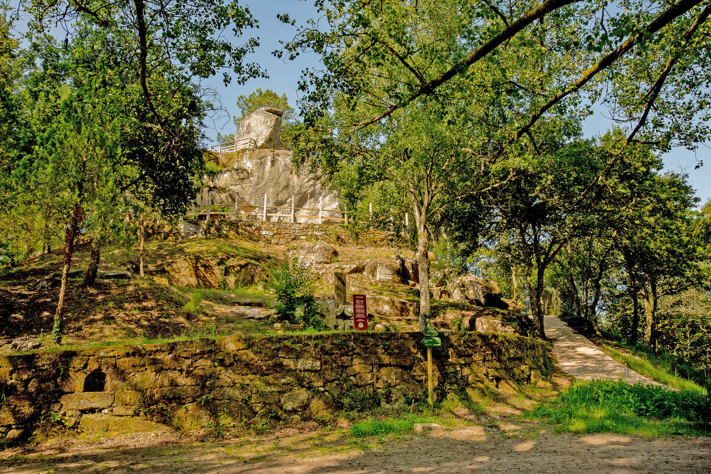
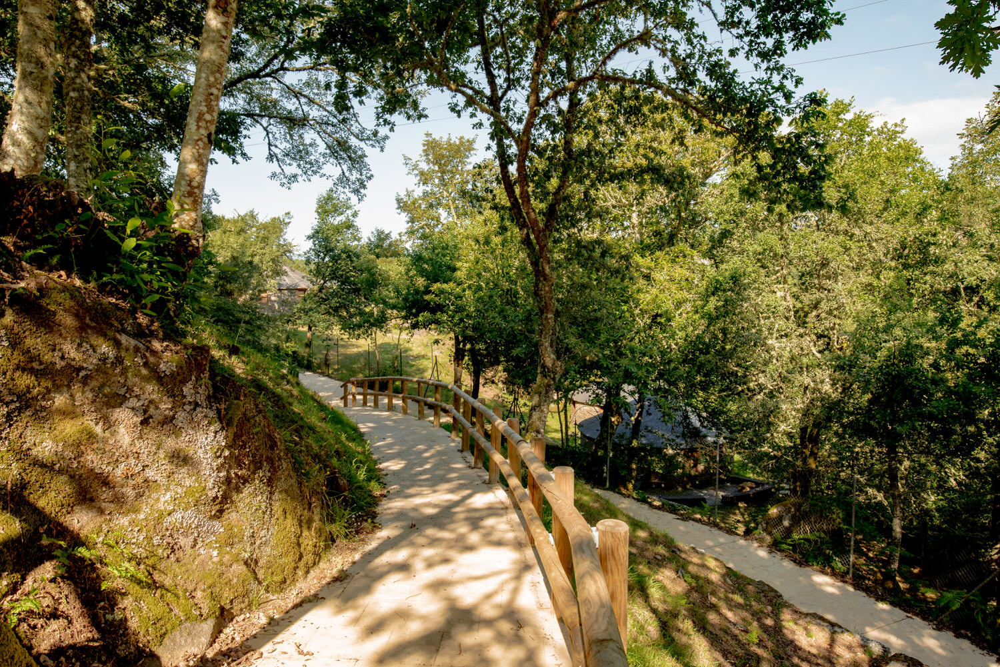

Lendas
A Pena dos Namorados



Ficha rápida da lenda
- Nome: A Pena dos Namorados
- Lugar: O Carballiño (Ourense)
- Protagonistas: Boán e Marta
- Final: Un amor tráxico que deu nome á pena.
A lenda en si
As lendas de amor case nunca acaban ben. E esta é unha delas. Coñecía a lenda da Pena dos Namorados moito antes de ir vela. Hai un par de anos pasei unha fin de semana polo Carballiño e aproveitei para subir ata o miradoiro. As fotos que vedes nesta entrada saqueinas eu aquel día. O miradoiro e as vistas son incribles, pero non deixaba de pensar na lenda que daba nome a aquel lugar.
Hai unha cantiga popular que sempre me gustou moito e que fala desta pena:
A Pena dos Namorados
é cantería moi forte:
está dicindo que o amor
remata vencendo a morte.
Hai algo nesa última frase que me encanta. "O amor remata vencendo a morte." Paréceme unha forma moi bonita de dicir que hai historias que nunca desaparecen mentres alguén siga lembrándoas.
A lenda conta que Boán, un mozo pagán, estaba namorado de Marta, unha moza cristiá. Pensando que ela non correspondía ao seu amor, pediu axuda a unha sacerdotisa. Esta preparoulle unha beberaxe cun dobre efecto: se Marta non estaba namorada del, faría nacer o amor; pero, se xa o estaba, volveríaa tola. E iso foi exactamente o que aconteceu. Marta xa estaba profundamente namorada de Boán. A beberaxe fixo que perdera o xuízo e acabou lanzándose desde a pena que hoxe leva o nome dos dous namorados.
Lembro que, cando saquei estas fotos, pensei no bonito que era aquel sitio. Agora, cada vez que as volvo ver, xa non penso só na paisaxe. Acordo inevitablemente de Boán e Marta. Creo que por iso me gustan tanto as lendas. Porque, unha vez que as coñeces, xa nunca volves mirar ese lugar da mesma maneira.
Bibliografía
Máxica, G. (2020, 23 abril). Pena dos Enamorados. Galicia Máxica | Algo Más Que Ver En Galicia.
https://www.galiciamaxica.eu/galicia/ourense/penamorados/
De DescubrirGalicia, L. T. L. E. (2019, 23 noviembre). Pena dos Namorados | Leyenda | O Carballiño | Ourense. Descubrir Galicia.
https://descubrirgalicia.wordpress.com/2018/08/11/pena-dos-namorados-leyenda-o-carballino-ourense/